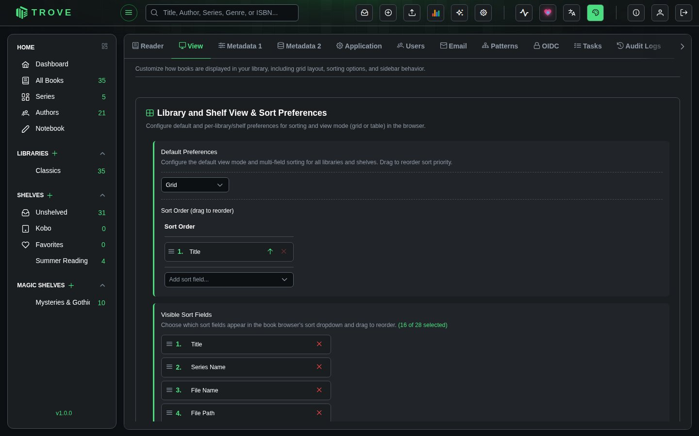
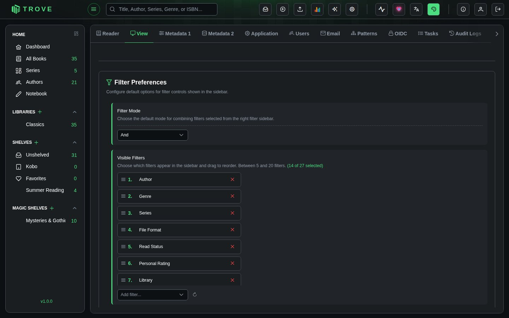
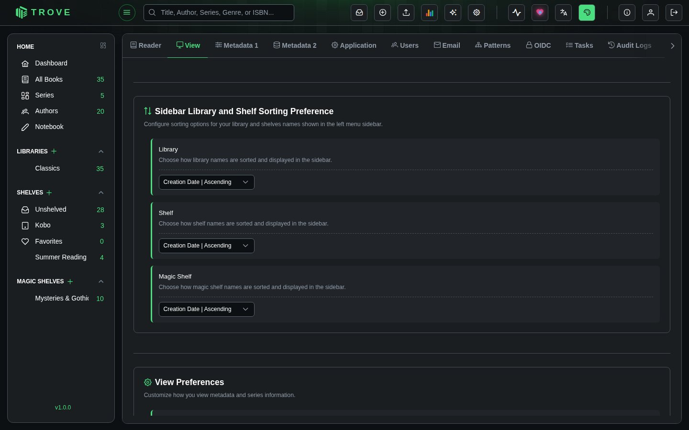
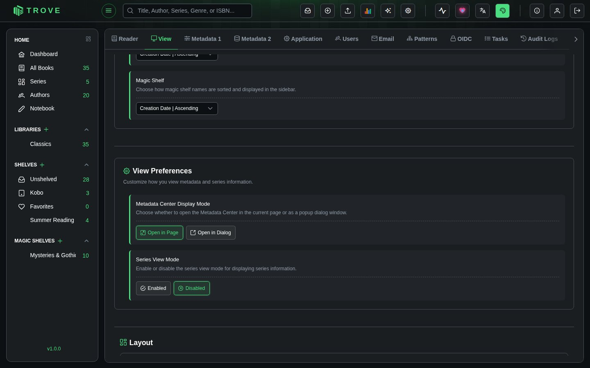

View preferences
Customize how books are displayed in your library, including grid layout, sorting options, and sidebar behavior. Each user can personalize these settings independently.
Navigate to Settings > View to access this page.
Library and Shelf View & Sort Preferences
Configure default and per-library/shelf preferences for sorting and view mode (grid or table) in the book browser.

Default Preferences
Set the default view mode and multi-field sorting for all libraries and shelves.
| Setting | Options | Default | Description |
|---|---|---|---|
| View Mode | Grid, Table | Grid | Choose how books are displayed. Grid shows book covers in a card layout. Table displays books in a sortable, columnar list. |
Sort Order
Define how books are sorted by default. You can set up multi-field sorting by adding multiple sort criteria, each with its own direction (ascending or descending). Drag entries to reorder sort priority.
Use the Add sort field dropdown to add additional sort criteria. Each criterion shows its sort direction (ascending or descending) and can be removed individually. The first entry is the primary sort field, with subsequent entries used as tiebreakers.
Visible Sort Fields
Choose which sort fields appear in the book browser's sort dropdown. Drag to reorder their position in the dropdown menu. You can select between 3 and 28 fields.
| Sort Field | Description |
|---|---|
| Title | Book title |
| File Name | Name of the book file on disk |
| File Path | Full path to the book file |
| Author | Author name (first last) |
| Author (Surname) | Author name sorted by surname |
| Series Name | Name of the series the book belongs to |
| Series Number | Position of the book within its series |
| Last Read | When the book was last opened |
| Personal Rating | Your personal star rating |
| Added On | Date the book was added to the library |
| File Size | Size of the book file |
| Locked | Whether the book's metadata is locked |
| Publisher | Book publisher |
| Published Date | Original publication date |
| Read Status | Current reading status (unread, reading, read) |
| Date Finished | When you finished reading the book |
| Reading Progress | Current reading progress percentage |
| Book Type | Format type (EPUB, PDF, CBZ, etc.) |
| Amazon Rating | Average rating from Amazon |
| Amazon # | Number of Amazon reviews |
| Goodreads Rating | Average rating from Goodreads |
| Goodreads # | Number of Goodreads reviews |
| Hardcover Rating | Average rating from Hardcover |
| Hardcover # | Number of Hardcover reviews |
| Ranobedb Rating | Average rating from RanobeDB |
| Narrator | Audiobook narrator |
| Pages | Page count |
| Random | Randomized order |
Use the Add sort field dropdown to include additional fields, or click the reset button to restore defaults. Click the X on any field to remove it from the list.
Auto-save on Navigation
| Setting | Default | Description |
|---|---|---|
| Auto-save on Navigation | Off | When enabled, automatically saves changes when navigating to the next or previous book in the metadata editor. When disabled, unsaved changes are discarded on navigation. |
Override Management
Add custom view and sort preferences for specific libraries, shelves, or magic shelves. Overrides let you configure a different view mode, sort order, or cover size for individual collections while keeping your global defaults for everything else.
Click + Add Override to create a new override. Select the entity type (Library, Shelf, or Magic Shelf), choose the specific collection, and configure its preferences.
Click Save Settings to persist all changes in this section.
Filter Preferences
Configure default options for the filter controls shown in the book browser sidebar.

Filter Mode
Choose the default mode for combining filters selected from the right filter sidebar.
| Mode | Description |
|---|---|
| And | Books must match all selected filters. Selecting "Author: Stephen King" and "Genre: Horror" shows only books that match both. |
| Or | Books must match any selected filter. Selecting "Author: Stephen King" or "Genre: Horror" shows books matching either condition. |
| Not | Books must match none of the selected filters. Selecting "Genre: Gothic" shows everything that isn\'t gothic. |
| Single | Only one filter can be active at a time. Selecting a new filter deactivates the previous one. |
Visible Filters
Choose which filters appear in the sidebar and drag to reorder. You can select between 5 and 20 filters from the 27 available.
| Filter | Description |
|---|---|
| Author | Filter by book author |
| Genre | Filter by genre/category |
| Series | Filter by series membership |
| Book Type | Filter by format (EPUB, PDF, CBZ, etc.) |
| Read Status | Filter by reading status (unread, reading, read) |
| Personal Rating | Filter by your star rating |
| Library | Filter by which library contains the book |
| Shelf | Filter by shelf assignment |
| Shelf Status | Filter by whether books are shelved or unshelved |
| Tag | Filter by user-assigned tags |
| Published Year | Filter by publication year |
| File Size | Filter by file size range |
| Amazon Rating | Filter by Amazon rating |
| Goodreads Rating | Filter by Goodreads rating |
| Hardcover Rating | Filter by Hardcover rating |
| Metadata Match Score | Filter by metadata match quality |
| Publisher | Filter by publisher name |
| Language | Filter by book language |
| Page Count | Filter by number of pages |
| Mood | Filter by mood/tone tags |
| Age Rating | Filter by age appropriateness rating |
| Content Rating | Filter by content rating |
| Narrator | Filter by audiobook narrator |
| Comic Character | Filter by comic book character |
| Comic Team | Filter by comic book team |
| Comic Location | Filter by comic book location |
| Comic Creator | Filter by comic book creator/artist |
Use the Add filter dropdown to include additional filters, or click the reset button to restore defaults.
Sidebar Library and Shelf Sorting Preference
Configure how library, shelf, and magic shelf names are sorted and displayed in the left navigation sidebar.

Each collection type (Library, Shelf, Magic Shelf) can be sorted independently using the same set of options:
| Sorting Option | Description |
|---|---|
| Name | Ascending | Alphabetical order (A to Z) |
| Name | Descending | Reverse alphabetical order (Z to A) |
| Creation Date | Ascending | Oldest first (by when the collection was created) |
| Creation Date | Descending | Newest first |
The default sorting for all three is Creation Date | Ascending, which preserves the order in which you created your collections.
View Preferences
Customize how you view metadata and series information.

| Setting | Options | Default | Description |
|---|---|---|---|
| Metadata Center Display Mode | Open in Page, Open in Dialog | Open in Page | Choose whether to open the Metadata Center in the current page or as a popup dialog window. Open in Page navigates to a full-page view. Open in Dialog opens a modal overlay, keeping you on the book browser. |
| Series View Mode | Enabled, Disabled | Disabled | Enable or disable the series view mode for displaying series information. When enabled, books that belong to a series are grouped together in the book browser. |
Layout
Adjust the layout dimensions of the application interface.

| Setting | Range | Default | Description |
|---|---|---|---|
| Sidebar Width | 175px to 400px | 225px | Controls the width of the navigation sidebar and the book filter panel. Drag the slider to adjust. The change applies immediately and persists across sessions. |
Notes
- View preferences are per-user. Each user has their own independent configuration.
- Changes to Library and Shelf View & Sort Preferences require clicking Save Settings to apply. Other sections save automatically.
- Sort order supports multi-field sorting. The first field is the primary sort, with additional fields used as tiebreakers when values are equal.
- Override preferences are useful for collections with different browsing needs (e.g., Grid for comics, Table for technical books).
- The sidebar width setting is stored locally in your browser. It does not sync across devices.
- Filter and sort field order is set by drag-and-drop. Grab the handle icon on the left of each item and drag to reposition.
- See Grid View and Table View for details on how each view mode works.
- See Reader Preferences for configuring reading experience settings.